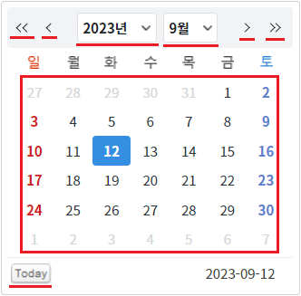
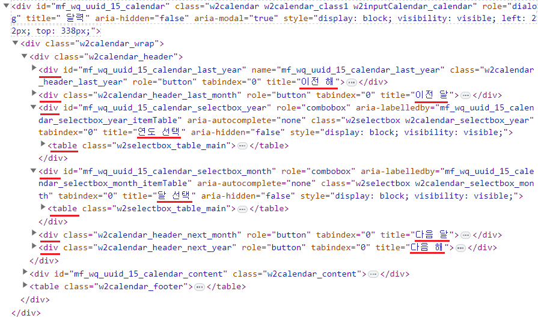
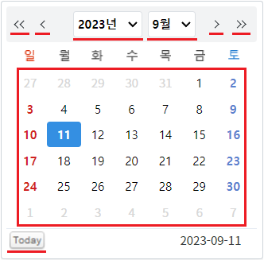
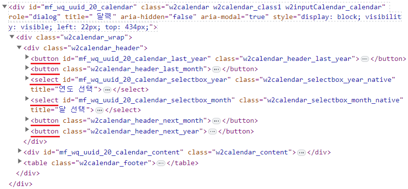
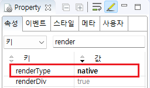

[InputCalendar] 브라우저에 랜더링할 때, 달력의 사용자가 선택할 수 있는 영역을 태그 'button'과 'select'로 구성하기
1개요
InputCalendar의 속성 'renderType'의 설정 값에 따른 기능을 비교하는 예제입니다. 이 속성은 화면의 달력 아이콘 클릭하면 생성되는 달력을 브라우저에 랜더링할 때 사용할 HTML 구성에 대해 설정할 수 있습니다. 설정 값을 'native'로 지정하면 사용자가 선택할 수 있는 영역이 태그 'button'과 'select'로 생성됩니다. 이 설정은 웹 접근성을 위해 사용합니다.
설정 값에 따른 구성은 다음과 같습니다.
component : [default] 달력 상단의 날짜 선택 영역이 'div'와 'table'로 구성됩니다. 달력의 '일'이 문자열로 구성됩니다. 달력 하단의 아이콘 '오늘 날짜'이 'div'로 구성됩니다.
native : 웹 접근성 설정을 위해 사용되는 설정 값입니다. 달력 상단의 날짜 선택 영역이 'button'과 'select'로 구성됩니다. 달력의 '일'이 'button'으로 구성됩니다. 달력 하단의 좌측 아이콘 '현재일'이 'button'으로 구성됩니다.
2구현된 기능
속성 'renderType'의 설정 값을 'component'로 설정하기
속성 'renderType'의 설정 값을 'native'로 설정하기
3예제 테스트 방법
3.1속성 'renderType'의 설정 값을 'component'로 설정하기
STEP 1. 달력 아이콘을 클릭합니다.
예제 영역 [(기본 설정 값) renderType="component"]에 구성된 InputCalendar의 달력 아이콘을 클릭합니다.그림 1.브라우저(Chrome) 실행 예시

STEP 2. 실행된 결과를 확인합니다.
달력의 상단 영역, '일' 영역, 하단의 좌측 아이콘 'Today' 영역을 브라우저 개발자 도구의 Elements(요소)탭을 통해 확인합니다.
그림 2.브라우저(Chrome) 실행 예시 - 달력의 하단 영역 확인

다음의 HTML 구조 예시는 달력의 상단 영역만 작성되었습니다.
브라우저에 랜더링된 HTML 구조 - 상단 영역
<div class="w2calendar w2calendar_class1 w2inputCalendar_calendar" role="dialog" title=" 달력" aria-hidden="false" aria-modal="true"> <div class="w2calendar_wrap"> <div class="w2calendar_header"> <div name="mf_wq_uuid_15_calendar_last_year" class="w2calendar_header_last_year" role="button" tabindex="0" title="이전 해"></div> <div class="w2calendar_header_last_month" role="button" tabindex="0" title="이전 달"></div> <div role="combobox" aria-labelledby="mf_wq_uuid_15_calendar_selectbox_year_itemTable" aria-autocomplete="none" class="w2selectbox w2calendar_selectbox_year" tabindex="0" title="연도 선택" aria-hidden="false"> <table class="w2selectbox_table_main"> <!-- 중략 --> </table> </div> <div role="combobox" aria-labelledby="mf_wq_uuid_15_calendar_selectbox_month_itemTable" aria-autocomplete="none" class="w2selectbox w2calendar_selectbox_month" tabindex="0" title="달 선택" aria-hidden="false"> <table class="w2selectbox_table_main"> <!-- 중략 --> </table> </div> <div class="w2calendar_header_next_month" role="button" tabindex="0" title="다음 달"></div> <div class="w2calendar_header_next_year" role="button" tabindex="0" title="다음 해"></div> </div> <!-- 중략 --> </div> </div>
그림 3.브라우저(Chrome) 개발자 도구의 Elements 예시 - 상단 영역

브라우저에 랜더링된 HTML Elements의 'id'는 실행 시점에 동적으로 부여되어 환경에 따라 다릅니다.
3.2속성 'renderType'의 설정 값을 'native'로 설정하기
STEP 1. 달력 아이콘을 클릭합니다.
예제 영역 [renderType="native"]에 구성된 InputCalendar의 달력 아이콘을 클릭합니다.그림 4.브라우저(Chrome) 실행 예시

STEP 2. 실행된 결과를 확인합니다.
달력의 상단 영역, '일' 영역, 하단의 좌측 아이콘 'Today' 영역을 브라우저 개발자 도구의 Elements(요소)탭을 통해 확인합니다.
그림 5.브라우저(Chrome) 실행 예시 - 달력의 하단 영역 확인

다음의 HTML 구조 예시는 달력의 상단 영역만 작성되었습니다.
브라우저에 랜더링된 HTML 구조 - 상단 영역
<div class="w2calendar w2calendar_class1 w2inputCalendar_calendar" role="dialog" title="달력" aria-hidden="false" aria-modal="true"> <div class="w2calendar_wrap"> <div class="w2calendar_header"> <button class="w2calendar_header_last_year">이전 해</button> <button class="w2calendar_header_last_month">이전 달</button> <select class="w2calendar_selectbox_year_native" title="연도 선택"> <option value="1978 ">1978년</option> <option value="1979 ">1979년</option> <!-- 중략 --> </select><select class="w2calendar_selectbox_month_native" title="달 선택"> <option value="1 ">1월</option> <option value="2 ">2월</option> <!-- 중략 --> </select> <button class="w2calendar_header_next_month">다음 달</button> <button class="w2calendar_header_next_year">다음 해</button> </div> <!-- 중략 --> </div> </div>
그림 6.브라우저(Chrome) 개발자 도구의 Elements 예시 - 상단 영역

브라우저에 랜더링된 HTML Elements의 'id'는 실행 시점에 동적으로 부여되어 환경에 따라 다릅니다.
4구현 예시
4.1사용자가 선택할 수 있는 영역을 태그 'button'과 'select'로 생성로 구성하기
InputCalendar의 속성을 정의합니다.
[필수] renderType="native"
(옵션 설명)
- component : [default] 달력 상단의 날짜 선택 영역이 'div'와 'table'로 구성됩니다. 달력 하단의 아이콘 '오늘 날짜'이 'div'로 구성됩니다.
- native : 웹 접근성 설정을 위해 사용되는 설정 값입니다. 달력 상단의 날짜 선택 영역이 'button'과 'select'로 구성됩니다. 달력의 '일'이 'button'으로 구성됩니다. 달력 하단의 좌측 아이콘 '현재일'이 'button'으로 구성됩니다.
그림 7.웹스퀘어5 SP5 스튜디오의 Property View(속성창) 예시

[소스 코드 예시]
<!-- inputCalendar 의 소스 본문 예시 --> <w2:inputCalendar renderType="native"> </w2:inputCalendar>
5주요 API
renderType
6참고 문서
[웹스퀘어5 SP5 개발 가이드] InputCalendar
링크 : https://docs1.inswave.com/sp5_user_guide/8df43d1f59fab704#579244ff7483b50c